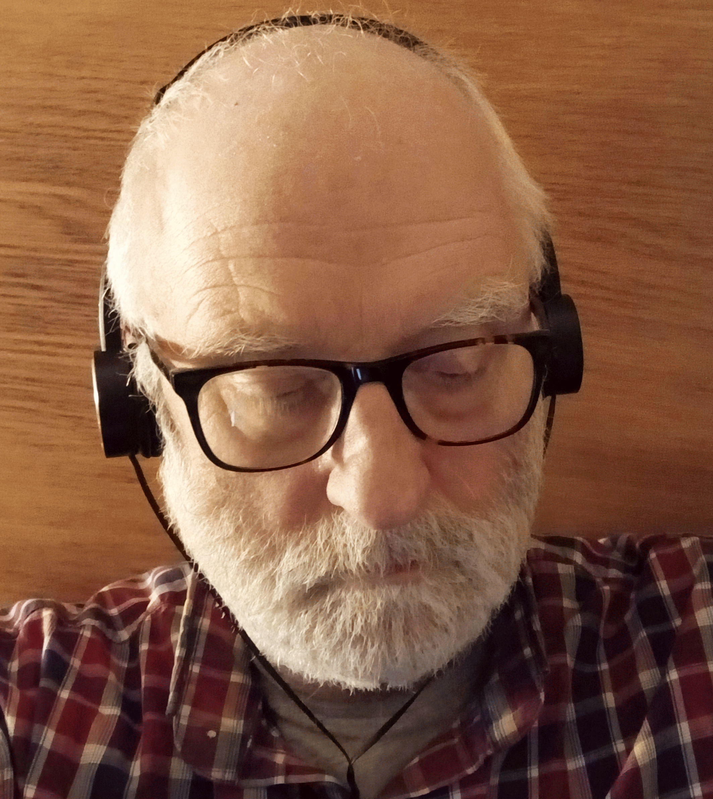

patrick manifold
audio cleanup and repair | verified transcripts | dataset preparation
Restoration
- difficult audio cleanup
- noise reduction
- speech enhancement
- speaker separation/preparation
- intelligibility improvement
Transcription and QA
- AI-assisted transcription
- manual verification
- accuracy correction
- speaker labeling
- timestamps

Structuring and annotation
- formatted transcripts
- subtitle files
- structured datasets
- tagging/annotation
- JSON/CSV/SQL exports